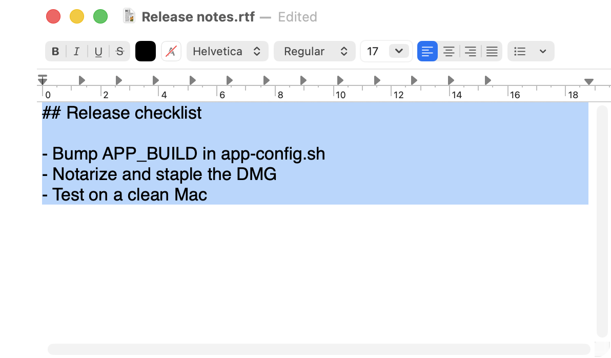
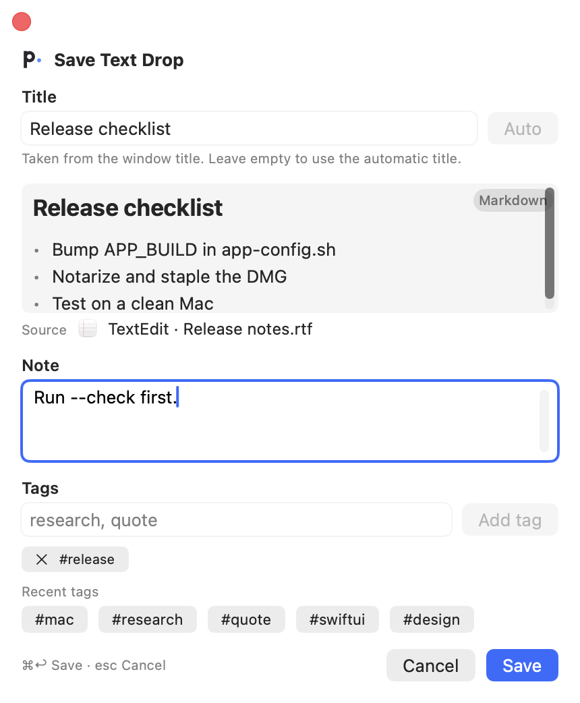

Select in any app, press one shortcut
Select text and press ⇧⌘C. Plopcut reads the selection directly when it can, without touching your clipboard, and keeps the app, window title, and Chrome tab URL as the source.
The save popup fills in a title, so add a note and tags and press ⌘↩. To keep text or an image you just copied, choose Save Clipboard from the menu bar.